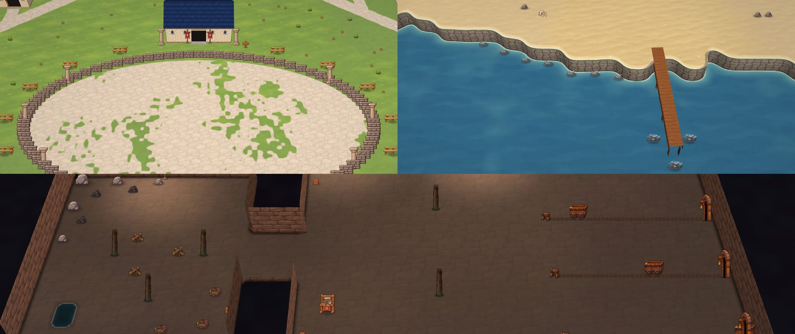
Update
The Minigames & Events Update
Three Minigames, Two World Events and New Shores to Explore
This is our biggest update yet.
Three minigames open their doors: climb the Duel Ring's Echo ladder in Tolvadden, load smugglers' carts for Fence Doyle in the Undermarket under Sloughton while the Watch's lanterns sweep the cellar, and haul lost things out of the fog at Fogwrack.
Every hour or so the world itself calls you out: guard the Salt Caravan across the Greenwarden Plains against hooded raiders, or race the tide to search the wreck at Polgarra Cove.
Take Senara's ferry to Quietside and keep its lanterns lit, explore Saltings Wood and the Greenwarden hunting grounds, forage for seasonings and cook dishes with buffs that last, and watch the rain roll over Sloughton.
The game closes for a minute during the update, with a countdown first; Microsoft Store players get it through the Store, and the launcher downloads only what changed.
Thanks for every report: keep them coming through Menu > Report a bug or the Discord.
Play now on Windows or Android, with one account in one world:
Highlights
- The Duel Ring. Climb a ten-rung ladder in Tolvadden's arena against Echoes of blades, archers and sorcerers near your level, or duel other players, for Renown and the Duellist's outfit.
- The Undermarket. Run Fence Doyle's smugglers' kitchen under Sloughton: gather, make and load five carts against the clock while the Watch's lanterns sweep the cellar.
- Fogwrack. Haul lost things out of the fog tide south of Pellow, cleanse them, and give them back to the ghosts waiting on the strand.
- Two world events. Every hour or so, guard the Salt Caravan from hooded raiders across the Greenwarden Plains, or race the low tide to loot the wreck at Polgarra Cove. Raiders can drop rare gear.
- New places. Quietside and Senara's ferry, Saltings Wood, Polgarra Cove and the Greenwarden hunting grounds, with eight new quests between them, and a new quest at Pellow.
- Foraging feeds the kitchen. New things to gather, bait for fishing, and seasoned dishes with a buff that lasts.
- A world with weather. Rain over Sloughton and the swamps, mist at Quietside, ash in the Wilderness: every area has its own mood.
- Bigger, clearer maps. The minimap zooms, and the world map zooms in to 6x.
- The Grand Market moves to the fountain. Its clerks are bank and market in one.
- Vouchers. Take items out of the bank as vouchers that stack, and trade them on the market.
- The bosses line up. Every boss sits at its own step on the way to the Storm Titan.
New
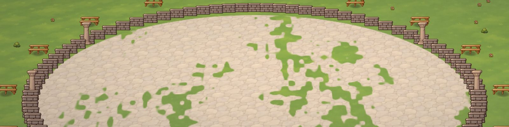
The Duel Ring
- A walled ring in Tolvadden's south meadow, run by Ringmaster Carveth from his hall by the north wall.
- The Echo ladder: 10 rungs, each an Echo of a blade, archer or sorcerer near your combat level: the first rungs are 1 to 3 levels below you, the last 1 to 3 above. Rungs 5 and 10 are champions in better gear. Each Echo shows its own name and level, mixes its style's moves, and its arrows and bolts lead a moving target.
- You start every rung at full HP. Losing costs nothing: no death, no grave, nothing dropped.
- Each rung pays its number in Renown, champions double, so a full climb pays 70 Renown. Echoes give half the combat XP of a monster of their level.
- A fight takes you into the walled arena, where you can move anywhere until it ends; then you're set down at the Ringmaster's hall door. Wait more than 90 seconds between rungs and the climb ends; you keep what you earned.
- Player duels: choose "Challenge another player" with the Ringmaster, challenge someone at the ring and pick the rules (food, potions, and which of melee, ranged and magic are allowed). Nothing is staked and nothing is lost. A challenge waits 30 seconds for an answer. A win pays 2 Renown, once a day for each pair of players.
- Carveth's shop (Renown): Duellist's Gloves 500; the Duellist's outfit, 144 a piece (Hat, Coat, Breeches, Cuffs, Boots).
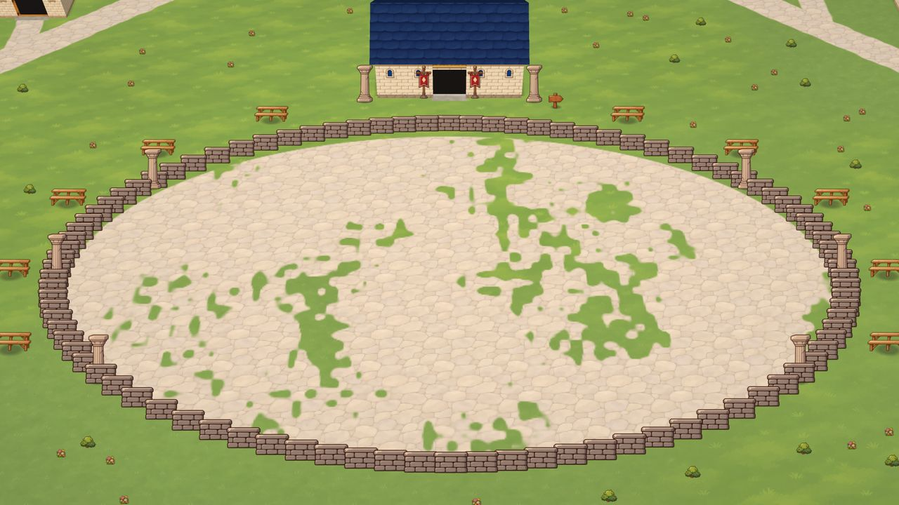
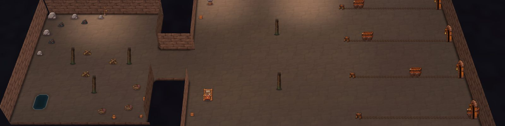
The Undermarket
- Fence Doyle runs it from a cellar under his house in Sloughton. Climb down the trapdoor and you're working; there's no shift or clock, and leaving the cellar ends it.
- Five carts wait at the rail, shared by everyone in the cellar. Each cart's order lists 1 to 3 different goods (1 to 3 of each), picked to suit someone down there, with 60 to 120 seconds on its clock and 30 more for each extra good.
-
Gather, make, load:
- Chip Seam Iron from the Old Seam with your pickaxe (Prospecting XP), split Cellar Timber from the Rotten Beams with your axe (Logging XP), and pull Smuggler's Rags from the Rag Pile by hand (Foraging XP). Every gather succeeds and the spots never run out; you can carry as much as the carts still need.
- Make the cellar's own goods at the Smuggler's Anvil, Workbench and Loom (Forging, Woodworking, Tailoring XP): Smuggler's Daggers, Strongbox Hinges, Crate Lids, Cask Staves, Rag Wraps and Smuggler's Sacks, from Rusty (Lv 1) to Sturdy (Lv 40).
- What you make goes into your bag. You can only make a good while a waiting cart still needs more of it than you carry.
- Walk up to a cart and press the action button (or interact) to load it: it takes what its own order still needs from your bag and leaves the other carts alone. When every line is full it rolls off into its tunnel, and a new cart rolls in with a new order.
- The rough materials and the goods never leave the cellar.
-
When a cart goes out full, everyone who loaded into it is paid for their share of the load:
- coins by your combat level, raised by your streak (a tenth more a cart, up to double);
- Marks by the work that went into the cart: 1 Mark for every 12 gathers and crafts, and a quarter more once your streak reaches 5. Part Marks carry over to your next cart.
- Your streak is your own. It starts with your first full cart, and each full cart you loaded into resets its timer to 150 seconds. Load into another full cart before the timer runs out and the streak grows; let it run out and the streak is gone.
- A cart whose time runs out rolls away empty, and a new one rolls in. Nobody is paid for it, and it doesn't touch anyone's streak. You can wave off a cart nobody else has loaded into.
- Watch out for the Watch: nine lanterns sweep the cellar at different speeds. Three circle the gathering room, three more go the other way round the stations and the carts, two zig-zag slowly through the cart lines, and one crosses the gathering room fast in an X. Caught in the light, you drop the goods in your bag. What's in a cart, your rough materials and your own things are safe.
- Doyle's shop (Marks): Smuggler's Boots 300; the Rogue's outfit, 96 a piece (Hood, Jerkin, Trousers, Gloves, Boots).
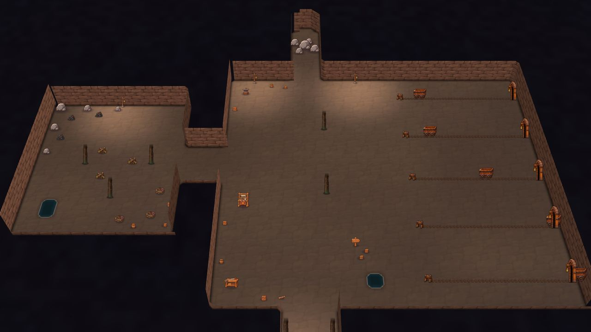
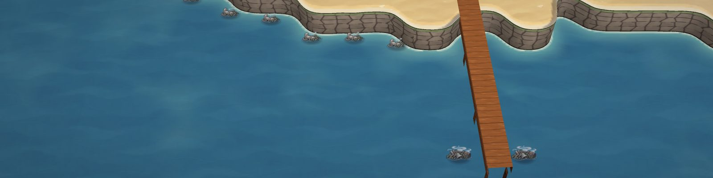
Fogwrack
- On the beach south of Pellow, where Morvoren the Wrack-keeper keeps his hut. Walk onto the strand and you're in.
- The fog tide comes in every 3 minutes and stays 60 seconds. Wrack floats in on the tide line, and deep wrack gathers round the end of Fogreach Pier. Walk up to a piece and press the action button to haul it: a 3.5-second pull. Your chance is 60% plus 1.25% for each Angling level above the find's (1 on the shore, 20 in the deep), up to 95%. The first 2 things you pull up each tide are ones somebody is waiting for.
- You can haul the shore wrack by hand, at three quarters of that chance. The deep wrack needs a Wrack-hook, which also adds 5% (up to 99%).
- Every haul pays Angling XP: as much as the best fish you can catch.
- The forgetting meter fills while you're on Fogreach Pier during a tide (about 25 seconds). When it's full, the fog takes back one of the lost things you've hauled (never your own items) and you're set back on the beach.
- A deep pull can raise a Fogborn (1 in 10). Beat it for a deep find, or let the line go and it sinks back.
- Cleanse what you find with Alchemy at the Keeper's Bench beside the hut: shore things from Alchemy 1, deep things from Alchemy 20. The chance is 70% plus 1% for each Alchemy level above the thing's, up to 95%; a failed cleanse loses the thing but still pays a quarter of the XP. The XP grows with your Alchemy level.
- The Waiting are the dead of this coast. Four of them rise from the fog each tide and fade when it goes out. Give a cleansed thing back to the one who lost it: 1 Remembrance for a shore find, 2 for a deep one. Things nobody wants can go on Morvoren's shelf.
- Morvoren's shop (Remembrances): Wrack-hook 200; Keeper's Thimble 300; the Keeper's outfit, 120 a piece (Sou'wester, Oilskin, Waders, Mitts, Boots).
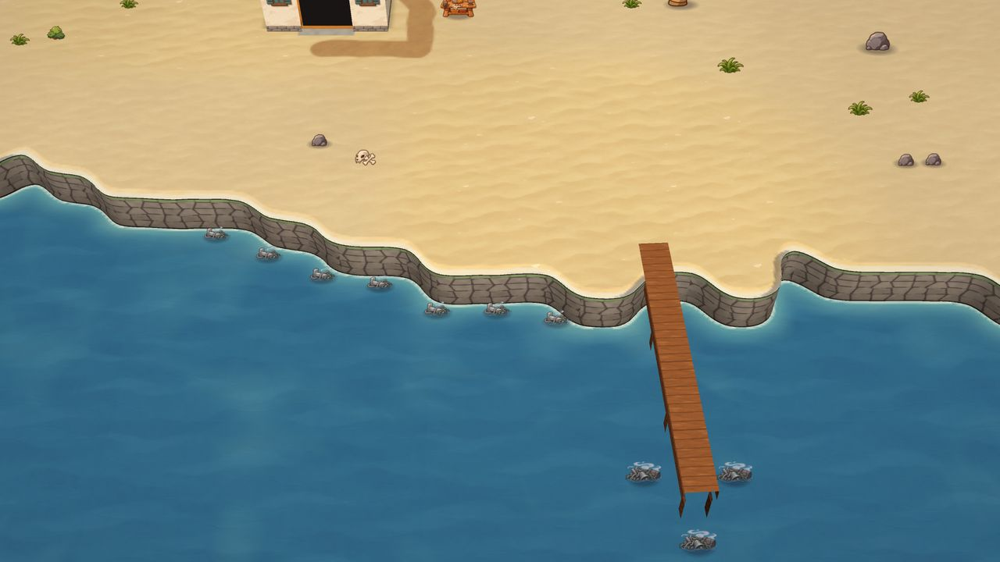
Rewards
Each minigame has its own currency and its keeper's shop. Rewards can't be traded or dropped, and you keep them if you die. Lose one and its keeper sells it again for a tenth of the price.
The Duel Ring: Ringmaster Carveth's shop
| Item | Cost | Stats | What it does |
|---|---|---|---|
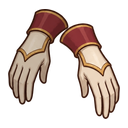 Duellist's Gloves | 500 Renown | Gloves: 10 Defence, +1% critical chance. Needs Defence 24. | After a dodge, your next hit within 3 seconds does 15% more damage. |
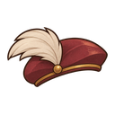 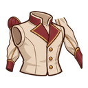 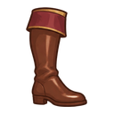 Duellist's outfitHat, Coat, Breeches, Cuffs, Boots | 144 Renown a piece | 2 / 4 / 3 / 1 / 2 Defence (head / body / legs / hands / feet), no level needed, no weight. | Full set: 20% faster health regeneration out of combat. |
The Undermarket: Fence Doyle's shop
| Item | Cost | Stats | What it does |
|---|---|---|---|
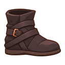 Smuggler's Boots | 300 Marks | Boots: 14 Defence, +2% evasion. Needs Defence 22. | Run energy drains 25% slower and comes back 25% faster. |
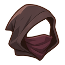 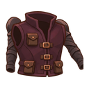 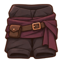 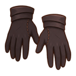 | 96 Marks a piece | 2 / 4 / 3 / 1 / 2 Defence (head / body / legs / hands / feet), no level needed, no weight. | Full set: 2.5% more XP for what you make in the Undermarket, and 10% more of Doyle's coins for every cart. |
Fogwrack: Morvoren's shop
| Item | Cost | Stats | What it does |
|---|---|---|---|
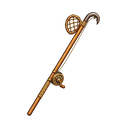 Wrack-hook | 200 Remembrances | Tool: works as a fishing net and rod. | Reaches Fogwrack's deep hauls off the end of Fogreach Pier, and every haul comes up 5% more often. |
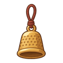 Keeper's Thimble | 300 Remembrances | Ring: 2 Attack, +1% critical chance. Needs combat level 18. | A 5% chance to save a material when you make something at a station (7% with the full Keeper's outfit). |
Keeper's outfitSou'wester, Oilskin, Waders, Mitts, Boots | 120 Remembrances a piece | 2 / 4 / 3 / 1 / 2 Defence (head / body / legs / hands / feet), no level needed, no weight. | 0.5% more XP cleansing wrack for each piece (2.5% for all five). The full set adds 2% to the Thimble's chance. |
The Salt Caravan: raider gear
The Lv 32 Raider Ravager on the Salt Caravan's road drops a piece of raider gear 1 time in 128, any of the six alike. Raider gear can be traded.
| Item | Drop | Stats |
|---|---|---|
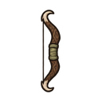 Antlerhook Bow | 1 in 128 (any piece) | Bow, two-handed: 137 Attack, +2% critical chance. Needs Archery 35. |
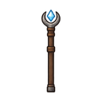 Crescentglass Staff | 1 in 128 (any piece) | Staff, two-handed: 206 Attack, +3% max MP. Needs Sorcery 35. |
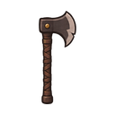 Fangnotch Greataxe | 1 in 128 (any piece) | Greataxe, two-handed: 240 Attack, +2% melee damage. Needs Melee 35. |
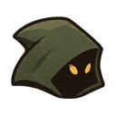 Fern Raider Hood | 1 in 128 (any piece) | Light helmet: 25 Defence, +1% evasion. Needs Archery 35. |
Storm Raider Hood | 1 in 128 (any piece) | Robe helmet: 16 Defence, +2% Sorcery damage. Needs Sorcery 35. |
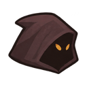 Ravager's Hood | 1 in 128 (any piece) | Heavy helmet: 39 Defence, +2% max HP. Needs Melee 35. |
Around the minigames
- Each keeper walks you through their minigame the first time you talk to them, and you get a few hints on your first round. Ask "How does this work again?" any time.
- The Hiscores window has three new boards: Duel Ring (best rung; on the same rung, the higher combat level ranks first), Undermarket (best streak of carts) and Fogwrack (returns).
- The website's hiscores (playmythwake.com/hiscores) have new Minigames and Events tabs: the Duel Ring's best rungs and duels won, the Undermarket's best streaks and carts loaded, Fogwrack's returns and Fogborn defeated, lanterns lit at Quietside, wreck spots searched and caravans escorted.
- The world map and minimap have a Minigames layer with an icon for each one.
Quietside
- Mennick Shore is now Quietside, and its landing is Quietside Landing.
- Senara's ferry crosses the lake between Quietside Landing, Lanvean's lakeside, the Rushmoor jetties and the Mennick Woods bank, 15 coins a ride. Walk up to the moored boat at a stop and press the action button to board; you land beside the boat at the other end. If you're hit or step out of the boat, the ride is off and the fare comes back. Now and then the boat brings something up.
- Lantern-keeping: the inner ring of buoys sits beside the jetty, and the outer ring along an old jetty that runs on into the Quiet. The Quiet puts out a buoy lantern every 90 seconds. Relight the inner ring with a Buoy Lantern for 15 Woodworking XP. The outer ring takes a Quiet Lantern and pays 20 Woodworking XP.
- The Quiet's mist rises out at the outer buoys: stay too long (33 seconds) and the Quiet sets you down on the bank. Nothing is lost.
- New gathering: Driftwood piles on the bank (Logging 8, 31 XP) and Sunken Timber in the shallows (Logging 16, 38 XP).
- New crafts: the Buoy Lantern (Woodworking 8, 2 Driftwood at a workbench, 46 XP) and the Quiet Lantern (Woodworking 16, 2 Sunken Timber, 52 XP).
-
New fish:
- Quietfin: Angling 16, 40 XP. Cooked at Cooking 16 for 56 XP, it heals 180 HP.
- Mistcarp: Angling 24, 57 XP. Cooked at Cooking 24 for 71 XP, it heals 234 HP.
Saltings Wood, Polgarra Cove and the Greenwarden hunting grounds
- Saltings Wood (Lv 6-14): a salt marsh with Hermit Wenwyn's turf hut by the salt pans.
- Polgarra Cove on the Mirefen Coast: a smugglers' landing, with Tregear Vosper and Exciseman Hoskin.
- The Greenwarden hunting grounds: Plains Jackals (Lv 19), Steppe Aurochs (Lv 23, Raw Beef on every kill), Tallgrass Mantises (Lv 27) and Barrow Hounds (Lv 30). The mantises and hounds attack on sight.
New quests
- Saltings Wood: Salt from the Sea (Beginner, recommended Lv 6), What the Mud Keeps (Beginner, 8) and A Hedge Supper (Beginner, 10; needs Cooking 10).
- Quietside: Lanterns on the Water (Beginner, 16) and The One Who Rowed Out (Beginner, 18).
- Polgarra Cove: Lights on the Mirefen (Intermediate, 18; Fence Doyle starts it), The Exciseman (Intermediate, 20) and What the Tide Uncovered (Intermediate, 24; needs Foraging 15).
- Pellow: The Shut House (Beginner, 4). Fisherman Col at the Shore Cottages wants to know what's behind a door that hasn't opened in anyone's memory. Reward: 150 coins and 180 XP.
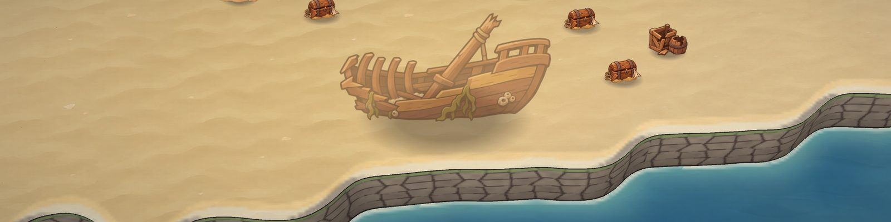
The Wreck at Low Water (world event)
- Every hour or so the tide goes out at Polgarra Cove for 5 minutes and uncovers a wreck on the sand spit. A warning goes out 3 minutes before.
- Search its 6 spots, each once per tide: coins, bait and shellfish, Raw Salmon, and now and then a Fen Pearl or Teleport Crystals.
- Wreck Crabs (Lv 20) come up with the wreck and go back with the tide.
- World events show in chat as [World Event] in orange, with a banner on screen.
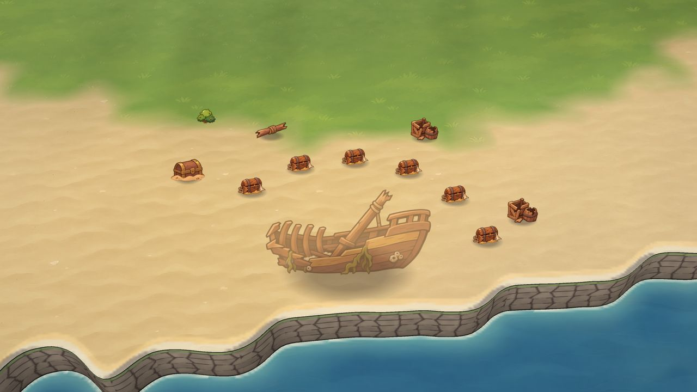
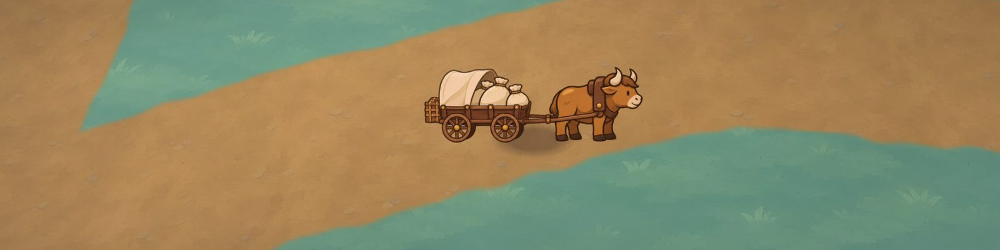
The Salt Caravan (world event)
- About every 75 minutes Caravan Master Penwarden's salt wagon leaves the Kiln Bridge and rolls east across the Greenwarden Plains towards the Tarrow Bridge. A warning goes out 5 minutes before it sets off.
- Hooded raiders (Plains Raiders with bows, Raider Stormcallers with staffs, and a Raider Ravager) come out of the long grass at three ambush spots, in waves, and the wagon waits until they're all down. Raiders nobody is fighting attack the wagon; if it's destroyed, the caravan is lost and nobody is paid.
- The road matches the guards' combat levels (the middle of the group). Up to level 25: Plains Raiders and Raider Stormcallers of Lv 20 and a Raider Ravager of Lv 24, and the run pays 300 coins. From 26: Plains Raiders and Raider Stormcallers of Lv 28 and a Raider Ravager of Lv 32, and it pays 450.
- You count as a guard if you hit a raider, or if you stay near the wagon for 40% of the run. The event panel shows whether you're counted.
- Collect your pay in person: when the wagons reach the Tarrow Bridge, Penwarden waits beside the road's end for 3 minutes. Talk to him to collect your share; if you weren't counted, he tells you why. Every other counted guard adds 20% to everyone's pay, up to 80% more. If your bag is full, the rest goes to your mailbox.
- Raider gear: the Lv 32 Raider Ravager can drop one of six pieces: the Antlerhook Bow, Crescentglass Staff and Fangnotch Greataxe, and the Fern Raider Hood, Storm Raider Hood and Ravager's Hood. A kill has a 1 in 128 chance of a piece, then any of the six alike.
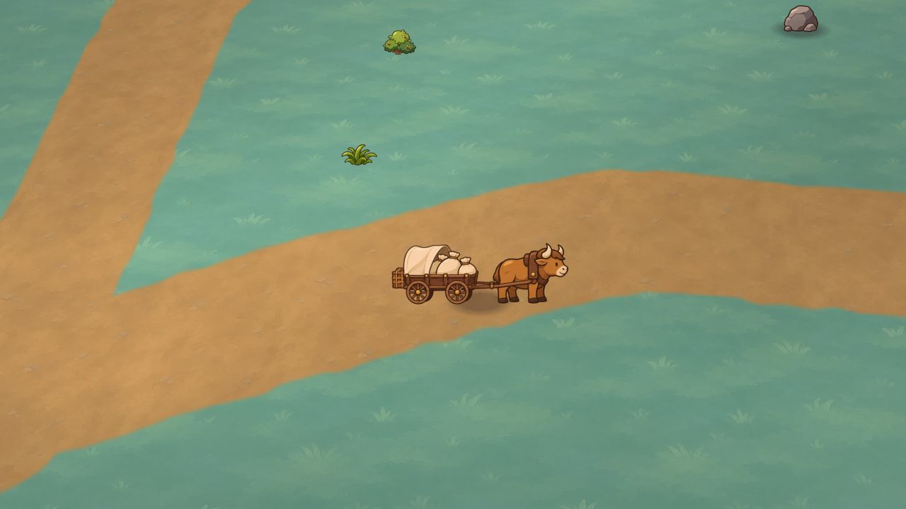
The Grand Market at the fountain
- The Grand Market has moved from the Vault to the Market Fountain, a new plaza north of Tolvadden's Clocktower.
- Its six clerks are bank and market in one, and you can collect from any of them. Town bankers are now bank only.
Foraging, bait and seasoned dishes
- 17 new kinds of Foraging spot, 167 in all:
- Salt Pans and Worm Casts (Lv 1)
- Brambles (3), Seaweed Rocks (5), Shellfish Beds (6), Sand-hopper Banks (8)
- Mushroom Patches (12), Rotten Logs (14), Samphire Beds (15), Garlic Patches and Hazel Thickets (18)
- Bog Myrtle and Leech Pools (22), Salt Seams (25), Wild Hives (28), Thyme Patches and Cave Crevices (30)
- Some finds can be eaten as they are: Wild Berries heal 36 HP, Shellfish 45, Field Mushrooms 54, Hazelnuts 66 and Honeycomb 90.
- Bait: carry Worms, Sand-hoppers, Grubs, Leeches or Cave Grubs while you fish. Each catch uses one, the best first. Any bait gives a 15% chance of a second fish; Leeches and Cave Grubs also give a 5% chance the catch is the next fish up.
-
Seasoned dishes (at a range) heal and give a buff for 10 minutes:
- Shellfish Stew (Cooking 6): heals 120, +3% max HP
- Hedge Pie (10): heals 189, 4% less MP cost
- Mushroom Stew (15): heals 189, +3% accuracy
- Hazel Roast (20): heals 264, 3% less damage from monsters
- Bog Pie (24): heals 264, +3% evasion
- Salt-crust Salmon (30): heals 339, +5% max HP
- Honey-glazed Salmon (32): heals 339, +4% accuracy and +1% crit chance
- One dish buff at a time: another dish replaces it. A buff ends when you die and keeps its time when you log out. You can eat a dish on a full stomach for its buff.
- Timed buffs show in a row on the HUD, each with a ring and the time left. Hover one for what it does.
- Roast Beef: Raw Beef cooked at Cooking 15, heals 150 HP.
Vouchers
- At the bank, switch Withdraw between Item and Voucher. A voucher stacks without limit and can be traded, sold on the market and mailed. The bank menu also has "Withdraw all as items" and "Withdraw all as vouchers".
- Deposit a voucher, or "Redeem" it at a banker, to get the real item back. Vouchers can't be used, equipped or eaten.
- Most items that don't stack can be vouchered; coins can't.
- Vouchers in your bag are never kept on death: they go to your grave like other items.
Improvements
- Minimap zoom: the mouse wheel, the - / + buttons, a pinch on a phone, or "Minimap zoom" in the controller's Select menu. It now shows 2,400 across by default (was 3,400), with bigger icons.
- The world map zooms in to 6x (was 3x).
- Zone moods: each area has its own light and colour. Drifting fog and weather come only where they mean something: rain and fog over Sloughton and the Rushmoor, the mist at Quietside, ash in the Wilderness, and the dungeons. Change it in Settings > Graphics > Atmosphere (Full, Light or Off).
- On PC the game shows a "Preparing the world" loading screen while it builds the world at start-up, instead of freezing.
- Relighting a buoy, boarding the ferry and climbing down into the Undermarket all use the action button.
- Tolgarrick's Furnace Row (2 furnaces and 2 anvils) now stands in a yard beside Anvil Hall (was out on the coast, south-east of town).
- The Mirefen Coast is a broad sand beach along the sea, with the marsh behind it.
- Phones: taps, holds and drags work like a mouse. A tap clicks, holding opens the item menu, hold and move drags an item, and dragging scrolls. Buttons light up when tapped, and notices sit at the bottom middle instead of running off the edge.
- Server messages in chat start with [Server].
- The loot window can be dragged, and it remembers where you put it.
- The map legend has a Quest markers toggle that hides the "!" and "?" on the world map and minimap.
- Thieving Gulls and Plains Striders drop Feathers instead of Bat Wings. Any brew that takes a Bat Wing takes a Feather too.
- The privacy policy now explains that the game records your characters' gameplay history (kills, first boss kills, notable drops, deaths and when quests were done) to run and balance the game. It stays on our server and is not shared.
Balance
- The boss ladder: each boss has its own step.
- The Bog King is Lv 32 (was 25) and now lives by Witch Tregenza's hut at the Mire Pool, south-west of Sloughton. It drops the Mirescale Gloves and Boots (Lv 32), and Yarrow (was Comfrey).
- The Storm Titan is Lv 40 (was 45) and drops 2-3 Steel Bars. Stormbreak Hollow reads Lv 35-40 (was 35-45).
- The Slag Giant and Old Snapper are gone, and their unique drops with them. Pieces you already own stay yours and keep working.
- Heart of the Mountain now ends at the Storm Titan in Stormbreak Hollow (was the Slag Giant). The Drowned Quarter has a new ending.
- The Drowned Quarter's recommended level is 31 (was 35); The Bog King's Circlet is 32 (was 25), and it needs combat level 30 (was 25).
- Pender's Deep reads Lv 30-40 (was 30-50).
- Old metal bands and herb earrings no longer drop from monsters. Silver jewellery drops in their place. Pieces you own stay yours.
Fixes
- Fixed monsters and other players moving in jerks instead of gliding after the server had been running for about 3 days.
- Monsters now give the 50% more combat XP per kill announced in the last update; it hadn't reached the live game. Bosses are unchanged.
- Fixed the bank's scroll bar and mouse wheel snapping back to the top.
- Fixed logging out against a wall, tree, bank counter or fence putting you back at Pellow when you logged in. You now come back where you were, or on the nearest open ground.
- Fixed the world map's Dungeons toggle leaving the dungeon entrances showing.
- Fixed the skill window showing 100% before you actually reach the next level.
- Fixed moves that deal no damage, such as Shadow Step, saying "100% damage".
- Fixed The Titan's Due sending you to the Mirefen Coast: Chief Grubnose is on the Hollin Downs, north-east of the Goblin Warren.
- Fixed menus on phones only working with a second finger down, holding an item in the bank doing nothing, and dragging an item scrolling the bank.